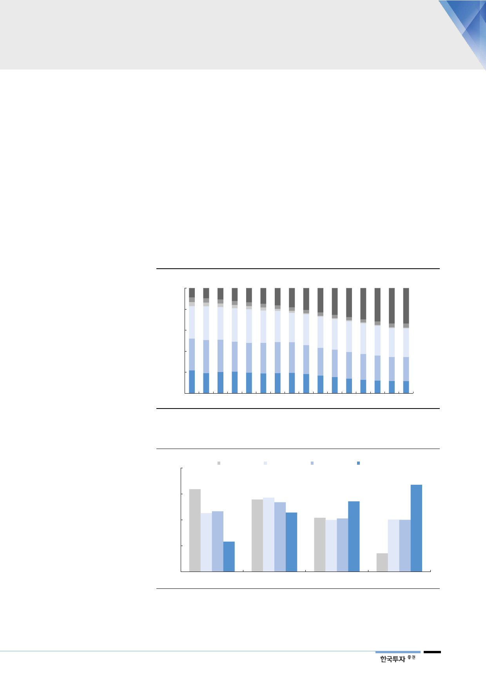

에너지 전환, 아직은
불확실성 높은 과도기
2. 에너지 전환의 과도기에서 속도조절론 부상
우리나라 전력시장은 변곡점을 맞이하고 있다. 정부의 탈원전 선언으로 에너지전
환의 속도는 더욱 빨라졌다. 정부는 신규원전 건설 계획을 백지화하고 원자력 발
전비중을 2030년까지 12%로 낮출 방침이다. 8차 전력수급계획으로 정책적 방향
성이 구체화되면 투명성이 높아질 것이란 기대감과 다르게, 여전히 불확실성은
해소되지 않았다. 현실적인 에너지 대안이 없는 상황에서 원전 축소, 전기요금 안
정, 탄소배출량 감축 등 다양한 목표를 달성하려다 보니, 오히려 정책의 신뢰성이
의심받고 있다. 결국 반대급부로 포기해야 하는 것이 생기기 마련인데, 현재로서
는 한국전력의 이익이다. 상반기 한전은 영업적자 8,147억원을 기록했다. 발전단
가가 가장 낮은 원전이 안전점검 강화로 정상적인 운영을 못했다. 유가상승과 맞
물려 LNG 도입단가가 계속 오르는데 요금인상 여부는 불투명해 보인다.
[그림 3] 8차 전력수급계획은 원자력/석탄 비중 줄이고 신재생으로 대체
(%)
100
8차 전력수급계획 발전비중
80
신재생
양수
60
석유
LNG
40
20
0
2016
2019F
자료: 산업통상자원부, 한국투자증권
2022F
2025F
2028F
석탄
원자력
2031F
[그림 4] 2031년까지 원자력 비중 12%로 낮추고 신재생 34%로 확대할 계획
(%)
40
30
20
10
5차(2024년) 6차(2027년) 7차(2029년) 8차(2031년)
22.9
27.2
33.6
11.7
0
원자력
자료: 산업통상자원부, 한국투자증권
석탄
LNG
신재생
3